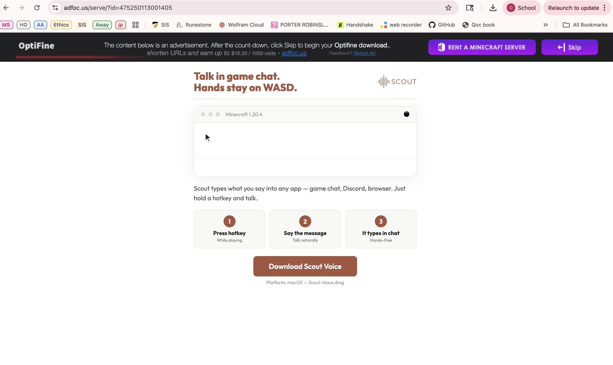

--- Weekly Reflection 6 ---
Dark Pattern #1 - Bait and Switch
Bait and Switch lures users with an enticing offer, only to change the terms unexpectedly.
The original promise often has hidden conditions, misleading users into thinking the deal is better than it is, or tricking them into commitments they didn't intend, eroding trust.
You might find this in a coupon offering a massive discount, only to see in the fine print that it only works for up to a certain amount.
Here is a an example from lift:

As you can see, lyft is advertising a massive discoount of 60% off, something that almost anyone would jump at. The only thing is that in the fine print it says, "You can take a max of $10.00 off per ride".
That means that the maximum value you can get out of this discout is from a ride costing $16.67. Which to me is a little disappointing.
Dark Pattern #2 - Nagging
Nagging bothers users with constant interruptions. Over time, this pressure can make users give in to these requests, even if it's not in their best interest.
For example an app might consistently prompt the user to download their app for an better experience.
Here is an example from Reddit:

Here you can see that when the user tries to open a post on the reddit webpage, a little pop-up shows up asking if they would like to open it in the reddit app.
This can be really annoying and eventually make the user succumb if ony to stop getting the pop-up.
Dark Pattern #3 - Confirm Shaming
When a product or a service is guilting or shaming a user for not signing up for some product or service.
Here is an example from microsoft Edge

In this case the user is on the download page for Google Chrome on the Microsoft browser, Edge. While on this page the user gets a pop-up in the top right saying "'I hate saving money,' said no one ever".
This message is trying to shame the user into not downloading Chrome, and sticking with Edge.
Dark Pattern #4 - Sneak into Baskets
When buying something, during your checkout, a website adds some additional items to your cart, making you take the action of removing it from your cart.
Here is an example from Appliences Online:

Here, on the checkout screen, we can see that Appliences online has added an extra item to the user's cart.
This forces the user to take action to remove the item.
Dark Pattern #5 - Cookie Wall
The cookie wall is when you visit a website for the first time, it asks you to accept cookie preferences that, by default, are set to use your information for marketing purposes and advertisement.
Here is an example from HRAcuity:


Cookie walls are a little annoying because it either requires you to accept all cookies or makes you think you need to accept all cookies.
The Dark Pattern That I've Personally Encountered
I want to talk about disguised ads. A disguised ad is when an advertisement on a website pretends to be a UI element and makes you click on it to forward you to another website.
One of the clearest examples in my mind of these desguised ads is the adfoc.us page for downloading mincraft mods.
I remember as a kid I wanted to download Optifine so that I could have a better looking game, or I wanted to download Forge to be able to use other mods like Pixelmon.
And Each time I tried to download a new mod, the mod page would send me to an adfoc.us page where the vast majority of the page is an ad for something or other usually with a big "Download here" button.
I went back to check if the page still works like that, by trying to download the newest optifine, and this is what the page looks like:

And as you can see it's still like this. It's not quite as decietful as I remember but it's not great. There's just a little bar at the top saying that the majority of the page is an ad and only a small button in the top right that lets you download the mod.